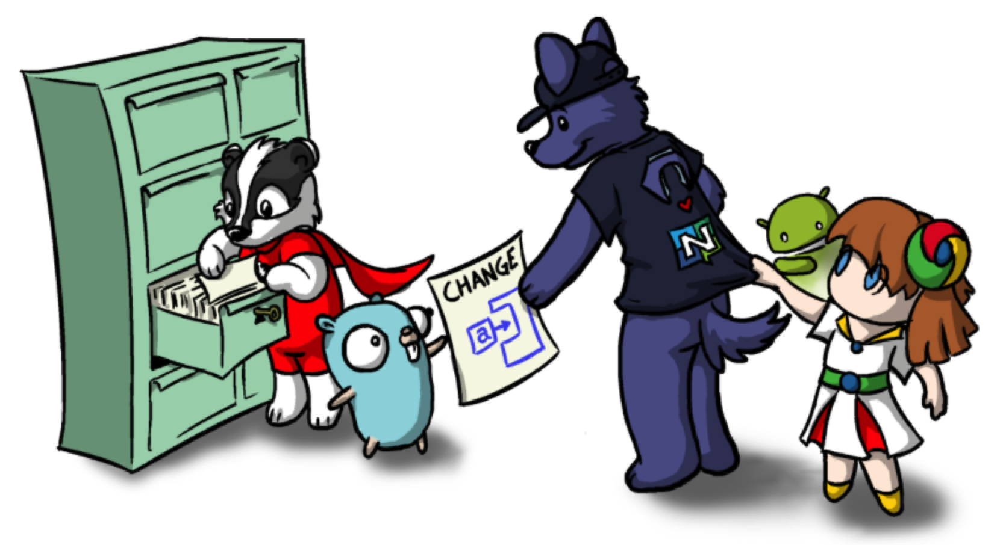
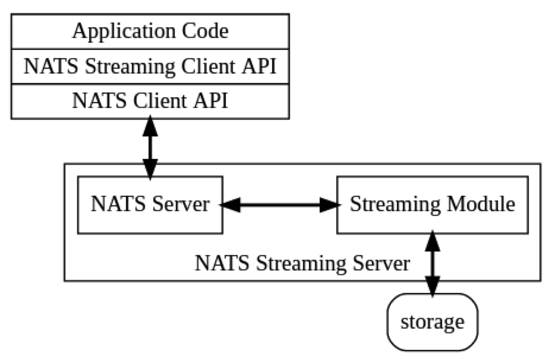
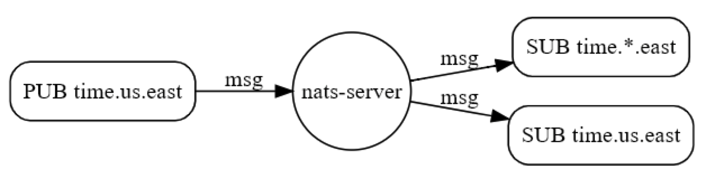
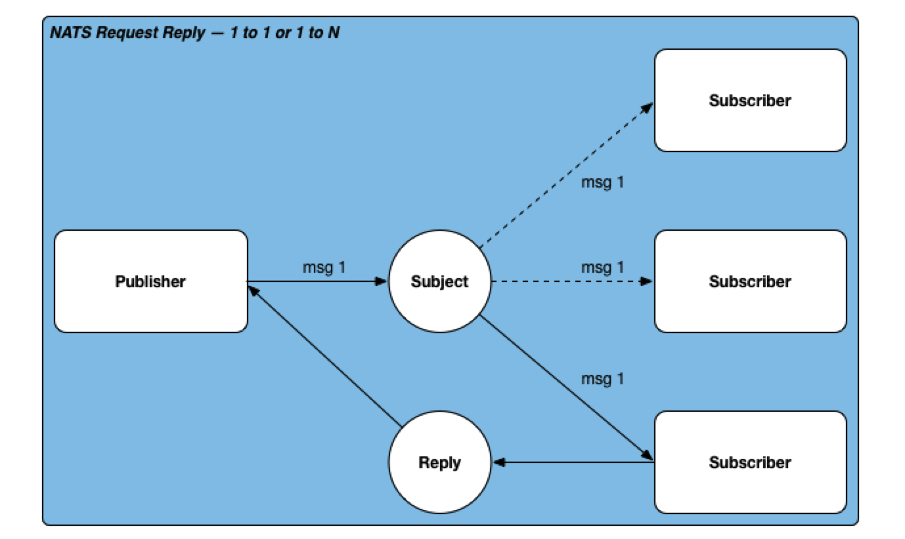
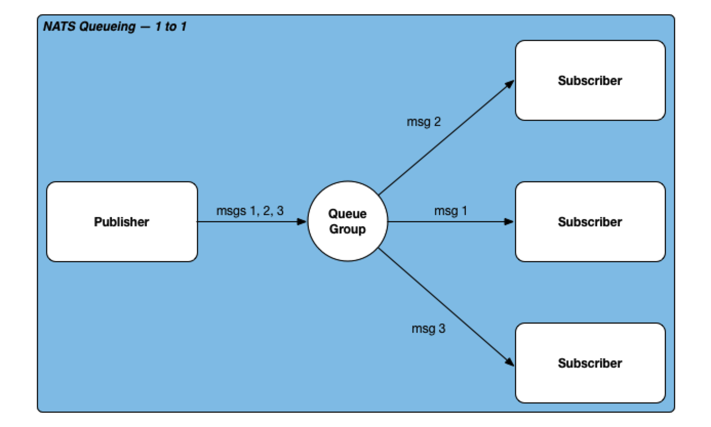
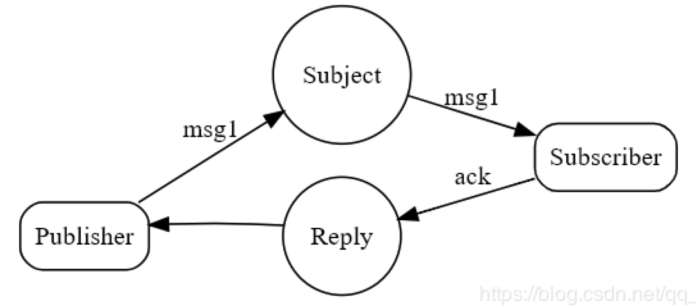
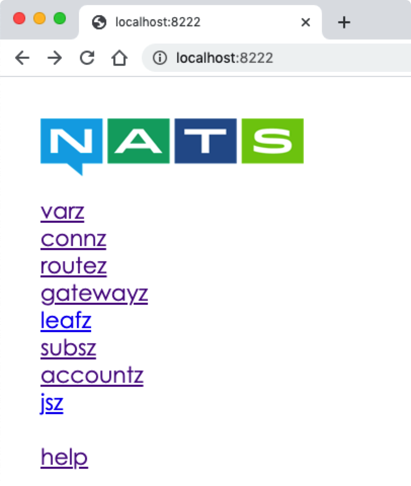
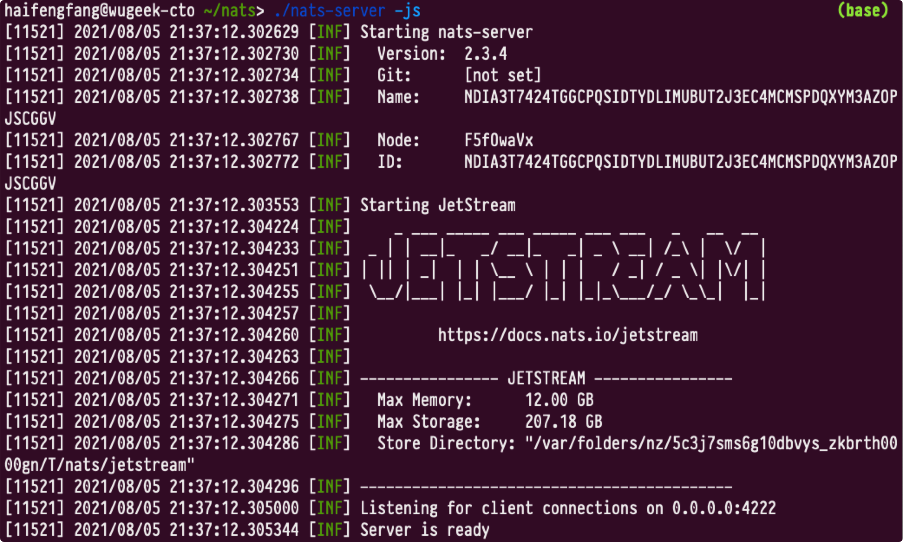
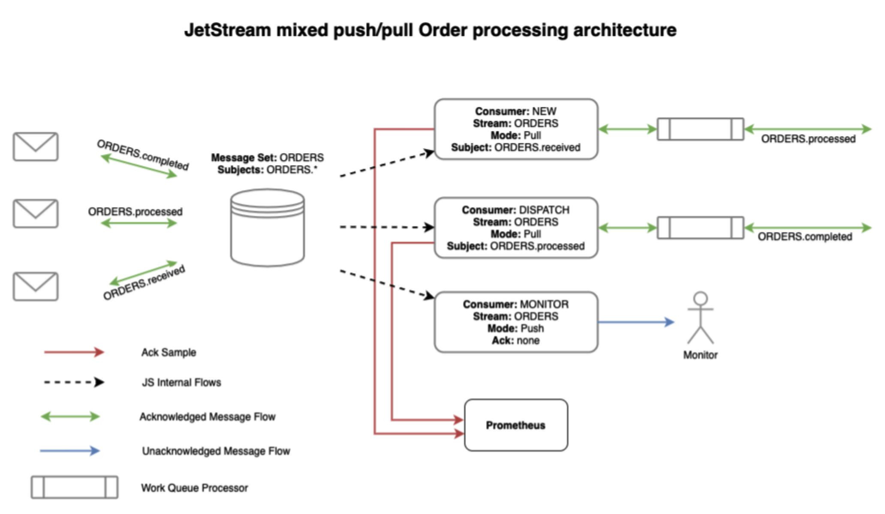

NATs 技术学习及其开发模式

目录
NATs 是一个开源的、轻量级的高性能消息分发系统。NATs 的消息基于主题进行分发，不依赖于网络位置。
NATS的协议是一个简单的、基于文本的发布/订阅风格的协议。客户端连接到 gnatsd（NATS服务器），并与 gnatsd 进行通信，通信基于普通的 TCP/IP 套接字，并定义了很小的操作集，换行表示终止。与传统的、使用了二进制消息格式的消息通信系统不同，使用了基于文本的 NATS 协议，使得客户端实现很简单，可以方便地选择多种编程语言或脚本语言来实现。
What is NATS
NATs is an open source, lightweight and high performance native message system developed by go language. NATs messages are handled by the subject and do not depend on the network location. It provides an abstraction layer between an application or service and the underlying physical network. The data is encoded and sent as a message by the publisher. Messages are received, decoded, and processed by one or more subscribers.

设计哲学：认为高质量的QoS应该在客户端构建
应用场景：
- 分发大量消息
- 给指定的实例、设备、用户发送数据。或发现连接到自己的实例、设备或用户
- 向应用或设备发送命令并接收命令执行结果
- 负载均衡，多路可伸缩能力，定位透明，容错
NATS 与 NATS Streaming 的区别：NATS最多交付一次（fire and forget，消息发送后不管），不支持持久化，而NATS Streaming 是一个基于 NATS协议的数据流服务程序，支持至少交付一次，可用于
- 从指定的时间或序列号还原事件流
- 终端持久化订阅
- 持久化或有保证的消息传送
NATS支持的特性：
- 纯发布/订阅，永远不假定有接收者，总是在线
- 基于文本的协议
- 至多发送一次（TCP level reliability）
- NATS立即向符合条件的订阅者发送消息，并不存留消息
- 至少发送一次（NATS Streaming）
- 如果匹配的订阅者一时不在线，Message 将被存储直到它被传送给订阅者，并得到订阅者确认。除非该消息超时或存储空间耗尽
- 持久性订阅（NATS Streaming）
- 服务端维护持久性订阅者的订阅推送状态，这样，持久性订阅者就可以知道它们在上一次会话中是在哪儿断开的
- Event 流服务（NATS Streaming）
- 根据时间戳、序列号或相对位差，消息被持久化存储在内存、文件或其它二级存储设备中
- 缓存最新一个或第一个值 （NATS Streaming）
- 订阅者连接上服务器以后，先向订阅者推送最近一次的publish消息
QOS
信息的投递保证，分成三个等级：
- Qos0（At most once）
- Qos1（At least once）
- Qos2（Exactly once）
At most once
Publisher若是选择QOS0, 則表示发送出信息后，信息會被最多投递0-1次。 Subscriber若是选择QOS0, 则MQ只要投递給任意Subscriber, 就會把该信息从MQ內丢弃。 这种方式，通常用在不在意状态一致性的情境上（例如邮件系统），又或者是debug log
At least once
Qos1通常是通过Log或任意的持久化方式来保证。
Publisher若是选择QOS1，Publisher就要等待MQ把信息写到持久化的存储上。一旦失敗, Publisher需要自己handler, 反正會返回Error。 Subscriber若是选择QOS1, 就必須发送Ack給MQ，MQ才会从持久化的存储中删除该信息。一旦失敗, MQ就会尝试重新投递。
这个模式最常被采用，但会出现多次投递的情况，导致重复消费的问题。
Exactly once
为了防止上面的会发生請求被多次重複消費的問題。Al least once + 冪等 = Exactly Once
这种模式实现的代价很高，等价于要保证强一致性，会对吞吐量产生很大影响。因此，支持该模式的MQ不是很多，Kafka是其中之一。
NATs支持的模式：
- NATS server 支持 Qos0
- NATS streaming 支持 Qos1

NATS 协议约定
一条NATS数据包包括如下内容：操作名 + 分隔符 + 内容
操作名（大小写不敏感）如下：
| 操作名 | 发送者 | 描述（内容） |
|---|---|---|
| INFO | Server | 初始化TCP/IP连接后发送给客户端 |
| CONNECT | Client | 发送给服务器指定连接信息 |
| PUB | Client | 发布消息到主题或Reply主题。注意：PUB 操作只能针对具体的某个topic(收件箱)，不能使用通配置符！ |
| SUB | Client | 订阅主题（或主题通配符） |
| UNSUB | Client | 取消订阅主题（或自动取消订阅） |
| MSG | Server | 交付一条消息负载给订阅者 |
| PING | C/S | 保持连接有效的PING活跃消息 |
| PONG | C/S | 保持连接有效的PONG活跃消息 |
| +OK | Server | 确认详细（Verbose）模式下协议消息的合法（对应CONNECT) |
| -ERR | Server | 指示协议错误，会导致客户端断开连接 |
测试方法：可以采用Telnet连接服务器进行测试
telnet demo.nats.io 4222
Trying 107.170.221.32...
Connected to demo.nats.io.
Escape character is'^]'.
# 收到 Server
INFO {"server_id":"1ec445b504f4edfb4cf7927c707dd717","version":"0.6.6","go":"go1.4.2","host":"0.0.0.0","port":4222,"
# Client 向 Server 发送操作
CONNECT {"verbose":false,"pedantic":false,"ssl_required":false,"name":"","lang":"go","version":"1.1.0"}\r\n
NATS 通信模型
1，消息处理
应用程序的数据被编码为一条消息，并通过发布者发送出去；订阅者接收到消息，进行解码，再处理。订阅者处理NATS消息可以是同步的或异步的。
- 异步处理
- 使用回调消息句柄处理消息，当有消息到来时，已注册的回调句柄接收并控制处理消息。整个过程客户端不会被阻塞，可以同步执行其它任务。异步处理可以采用多线程调度的设计。
- 同步处理
- 需要应用程序显式调用方法来处理到来的消息。这种显示调用是阻塞式的调用，会暂停任务直到消息可用。如果没有可用的消息，消息处理阻塞的周期由客户端设置。同步处理通常用于服务器等待并处理传入的请求消息，并发送响应给客户端。
2，基于主题的消息
subject is a string of characters that publishers and subscribers can use to find each other’s names.

- 主题支持层次
- 以".“分割层次
- 支持单层通配符”*"
- 支持多层通配符">"
NATS 应用场景
1，广播
NATs implements a publish subscribe message distribution model of one to many communication. The publisher sends a message about the topic and any active subscribers listening to the topic receive the message. Subscribers can also register content interested in Wildcard themes, which work a bit like regular expressions (but only a little). This one to many pattern is sometimes called fan out.
NATs实现了一种一对多的消息分发机制。发布者发布某个主题的消息，任何活跃的订阅者通过监听所感兴趣的主题来接收消息。

NATS的发布/订阅通信模型是一对多的消息通信。发布者在一个主题上发送消息，任何注册（订阅）了此主题的客户端都可以接收到该主题的消息。订阅者可以使用主题通配符订阅感兴趣的主题。有时被称为扇出(fan-out)
nc, _ := nats.Connect(nats.DefaultURL)
defer nc.Close()
nc.Publish("foo", []byte("Hello World!"))
nc, _ := nats.Connect(nats.DefaultURL)
defer nc.Close()
nc.Subscribe("foo", func(m *nats.Msg) {
fmt.Printf("Received a message: %s\n", string(m.Data))
})
对于订阅者，可以选择异步处理或同步处理接收到的消息。如果异步处理消息，消息交付给订阅者的消息句柄。如果客户端没有句柄，那么该消息通信是同步的，那么客户端可能会被阻塞，直到它处理了当前消息。
2，对话
The request is published together with the answer topic on a given topic, and the responder listens for the topic and sends the response to the answer topic. The reply topic is usually a topic called “inbox”, which will be dynamically directed back to the requester, regardless of the location of either party. The ability of NATs even allows multiple responses, the first of which is utilized and the system effectively discards the additional responses. This allows a complex pattern to have multiple responders to reduce response latency and jitter.
NATs基于pubsub机制实现了request/reply通信。请求者发布一个request时会针对某个主题伴随一个回复主题，响应者监听某个主题，并发回该回复主题的reply。该reply topic 通常称为“inbox"。 NATs允许发回多个response，其中通过首个response，可以有效地抛弃其余的response。

NATS支持两种请求-响应消息通信：
P2P（点对点）
O2M（一对多）
P2P最快、响应也最先。
而对于O2M，需要设置请求者可以接收到的响应数量界限（默认只能收到一条来自订阅者的响应，并且是随机的）
在请求-响应模式，发布请求操作会发布一个带预期响应的消息到Reply主题。请求创建了一个收件箱，并在收件箱执行调用，并进行响应和返回。多个订阅者订阅了同一个主题，请求者向该主题发送一个请求，默认只收到一个订阅者的响应(随机)。
事实上，NATS协议中并没有定义 “请求” 或 “响应"方法，它是通过 SUB/PUB变相实现的：请求者先通过SUB创建一个收件箱，然后发送一个带 reply-to 的PUB，响应者收到PUB消息后，向 reply-to 发送响应消息，从而实现请求/响应。reply-to和收件箱都是一个 subject，前者是后者的子集。
nc, _ := nats.Connect(nats.DefaultURL)
defer nc.Close()
nc.Subscribe("foo", func(m *nats.Msg) {
nc.Publish(m.Reply, []byte("I will help you"))
})
reply, _ := nc.Request("foo", []byte("help"), 50*time.Millisecond)
fmt.Println(string(reply.Data))
3，负载均衡
NATs provides a built-in load balancing feature called distributed queues. Using queue subscribers balances messaging between a set of subscribers that can be used to provide application fault tolerance and large-scale workload processing. To create a queue subscription, you only need the subscriber to register the queue name. All subscribers with the same queue name form a queue group. No configuration is required. When a message is published on a registered topic, a member of the group is randomly selected to receive the message. Although the queue group has multiple subscribers, each message is used by only one subscriber. An important feature of NATs is that queue groups are defined by the application and its queue subscribers, not on the server configuration.
NATs内置了一种称为”分布式队列“的负载均衡机制。基于该机制可以实现针对订阅者的容错和大规模处理。对于创建一个queue订阅，只需要订阅者注册一个queue name，而无需额外的配置。所有注册同一个queue name的订阅者，构成了一个queue group。发布者像一个queue group发送一个消息后，该queue group中的一个随机成员（订阅者）会接受到消息。尤为重要的是，queue group在应用中定义，而非通过系统配置进行。

NATS支持P2P消息通信的队列。
要创建一个消息队列，订阅者需注册一个队列名。所有的订阅者用同一个队列名，形成一个队列组。当消息发送到主题后，队列组会自动选择一个成员接收消息。尽管队列组有多个订阅者，但每条消息只能被组中的一个订阅者接收。
队列的订阅者可以是异步的，这意味着消息句柄以回调方式处理交付的消息。同步队列订阅者必须建立处理消息的逻辑。
队列模型一般常用于数据队列使用，例如：从网页上采集的数据经过处理直接写入到该队列，接收端一方可以起多个线程同时读取其中的一个队列，其中某些数据被一个线程消费了，其他线程就看不到了，这种方式是为了解决采集量巨大的情况下，后端服务可以动态调整并发数来消费这些数据。说白了就一点，上游生产数据太快，下游消费可能处理不过来，中间进行缓冲，下游就可以根据实际情况进行动态调整达到动态平衡。
nc, _ := nats.Connect(nats.DefaultURL)
defer nc.Close()
received := 0
nc.QueueSubscribe("foo", "worker_group", func(_ *nats.Msg) {
received++
})
4，确认
In systems with up to one semantics, messages are sometimes lost. If your application is performing a request answer, it should use a timeout to handle any network or application failures. It’s always a good idea to set a timeout on a request and use code that handles the timeout. When publishing an event or data flow, one way to ensure message delivery is to convert it to a request reply with an ACK concept. In NATs, an ACK can be an empty message, a message without a payload.
对于消息丢失的情况，一般来说需要应用程序通过超时机制来处理。当发布一个 event 或 dataflow 时，确保正确发送的一个方法是采用 Ack。在NATs中，一个ack可以是一个空消息。

nc, _ := nats.Connect(nats.DefaultURL)
defer nc.Close()
nc.Subscribe("foo", func(m *nats.Msg) {
// 注意与请求响应模式的区别
// nc.Publish(m.Reply, []byte("I will help you"))
m.Respond([]byte(""))
})
reply, _ := nc.Request("foo", []byte("help"), 50*time.Millisecond)
fmt.Println("ack:", string(reply.Data))
NATs 安装部署
采用docker方式安装并启动 nats
sudo docker pull nats:latest
sudo docker run -p 4222:4222 -ti nats:latest
采用源码安装
itable@itable:~$ mkdir nats
itable@itable:~$ cd nats/
itable@itable:~/nats$ go mod init nats
go: creating new go.mod: module nats
itable@itable:~/nats$ go get github.com/nats-io/nats-server
itable@itable:~/nats$ go build github.com/nats-io/nats-server
itable@itable:~/nats$ go install github.com/nats-io/nats-server
itable@itable:~/nats$ ls
go.mod go.sum nats-server
itable@itable:~/nats$ ./nats-server
[162121] 2021/08/05 14:59:39.946279 [INF] Starting nats-server version 1.4.1
[162121] 2021/08/05 14:59:39.947381 [INF] Git commit [not set]
[162121] 2021/08/05 14:59:39.952697 [INF] Listening for client connections on 0.0.0.0:4222
[162121] 2021/08/05 14:59:39.953689 [INF] Server is ready
NATs 官方示例
下载官方示例
itable@itable:~$ cd nats/
itable@itable:~/nats$ go get github.com/nats-io/nats.go
go: downloading github.com/nats-io/nats.go v1.11.0
go: downloading github.com/nats-io/nkeys v0.3.0
go get: added github.com/nats-io/nats.go v1.11.0
cd ~/go/pkg/mod/github.com/nats-io/nats.go@v1.11.0/examples
itable@itable:~/go/pkg/mod/github.com/nats-io/nats.go@v1.11.0/examples$ tree ./
├── nats-bench
│ └── main.go
├── nats-echo
│ └── main.go
├── nats-pub
│ └── main.go
├── nats-qsub
│ └── main.go
├── nats-req
│ └── main.go
├── nats-rply
│ └── main.go
└── nats-sub
└── main.go
PUB/SUB
Nats-sub/main.go
// Connect to NATS
// urls = nats.DefaultURL
// opts = []
nc, err := nats.Connect(*urls, opts...)
if err != nil {
log.Fatal(err)
}
// subj = 主题名称
subj, i := args[0], 0
nc.Subscribe(subj, func(msg *nats.Msg) {
i += 1
printMsg(msg, i)
})
nc.Flush()
if err := nc.LastError(); err != nil {
log.Fatal(err)
}
log.Printf("Listening on [%s]", subj)
Nats-pub/main.go
// Connect to NATS
nc, err := nats.Connect(*urls, opts...)
if err != nil {
log.Fatal(err)
}
defer nc.Close()
subj, msg := args[0], []byte(args[1])
if reply != nil && *reply != "" {
nc.PublishRequest(subj, *reply, msg)
} else {
nc.Publish(subj, msg)
}
nc.Flush()
if err := nc.LastError(); err != nil {
log.Fatal(err)
} else {
log.Printf("Published [%s] : '%s'\n", subj, msg)
}
测试
nats-pub$ go run main.go msg.test "hello"
Published [msg.test] : 'hello'
nats-sub$ go run main.go msg.test
Listening on [msg.test]
[#1] Received on [msg.test]: 'hello'
Request/Reply
Nats-rply/main.go
// Connect to NATS
nc, err := nats.Connect(*urls, opts...)
if err != nil {
log.Fatal(err)
}
// reply = "回复主题"
subj, reply, i := args[0], args[1], 0
nc.QueueSubscribe(subj, *queueName, func(msg *nats.Msg) {
i++
printMsg(msg, i)
msg.Respond([]byte(reply))
})
nc.Flush()
if err := nc.LastError(); err != nil {
log.Fatal(err)
}
log.Printf("Listening on [%s]", subj)
if *showTime {
log.SetFlags(log.LstdFlags)
}
Nats-req/main.go
// Connect to NATS
nc, err := nats.Connect(*urls, opts...)
if err != nil {
log.Fatal(err)
}
defer nc.Close()
subj, payload := args[0], []byte(args[1])
msg, err := nc.Request(subj, payload, 2*time.Second)
if err != nil {
if nc.LastError() != nil {
log.Fatalf("%v for request", nc.LastError())
}
log.Fatalf("%v for request", err)
}
log.Printf("Published [%s] : '%s'", subj, payload)
log.Printf("Received [%v] : '%s'", msg.Subject, string(msg.Data))
测试（可见，一般RR模式与Queue模式配合使用）
请求在给定的主题上与应答主题一起发布，应答者侦听该主题并将响应发送到应答主题。应答主题通常是一个称为_INBOX的主题，它将被动态地定向回请求者，而不考虑任何一方的位置。NATS的能力甚至允许多个响应，其中第一个响应被利用，而系统有效地丢弃了附加的响应。这允许一个复杂的模式有多个响应器减少响应延迟和抖动。
nats-req$ go run main.go help.please "I need help!"
Published [help.please] : 'I need help!'
Received [_INBOX.LmVVzGMrL7aEccF2zfw9Yc.eZkBPPve] : 'OK, I CAN HELP!!!'
nats-rply$ go run main.go help.please "OK, I CAN HELP!!!"
go run main.go help.please "OK, I CAN HELPclear!"
Listening on [help.please]
[#1] Received on [help.please]: 'I need help!'
Queue
Nats-qsub/main.go
// Connect to NATS
nc, err := nats.Connect(*urls, opts...)
if err != nil {
log.Fatal(err)
}
subj, queue, i := args[0], args[1], 0
nc.QueueSubscribe(subj, queue, func(msg *nats.Msg) {
i++
printMsg(msg, i)
})
nc.Flush()
if err := nc.LastError(); err != nil {
log.Fatal(err)
}
log.Printf("Listening on [%s], queue group [%s]", subj, queue)
测试（可以看到：my-queue组中只有一个subscriber，以及非my-queue组中的subscriber，收到了消息
nats-pub$ go run main.go foo "Hello NATS!"
Published [foo] : 'Hello NATS!'
nats-qsub$ go run main.go foo my-queueListening on [foo], queue group [my-queue]
[#1] Received on [foo] Queue[my-queue] Pid[164184]: 'Hello NATS!'
nats-qsub$ go run main.go foo my-queueListening on [foo], queue group [my-queue]
nats-sub$ go run main.go foo
Listening on [foo]
[#1] Received on [foo]: 'Hello NATS!'
NATs 开发实践
JSON 消息
官方的示例代码存在一个问题, Publisher 和 Subscriber 发送和接收消息都是 msg *nats.Msg, 这个是封装好的结构体：
// Msg is a structure used by Subscribers and PublishMsg().
// nats客户端默认的消息传输结构, 字段分别是:
// @1: 主题名
// @2: 回复的主题名(如果回复对方,使用此主题)
// @3: 数据
// @4: 订阅信息
// @5: 获取下一条Msg
type Msg struct {
Subject string
Reply string
Data []byte
Sub *Subscription
next *Msg
}
支持JSON消息：nats.NewEncodedConn(nc, nats.JSON_ENCODER)
# 订阅者
type person struct {
Name string
Address string
Age int
}
func printMsgJson(s string, p *person, i int) {
log.Printf("[#%d] Received on [%s]: '%#v'\n", i, s, p)
}
func main() {
var urls = flag.String("s", nats.DefaultURL, "The nats server URLs (separated by comma)")
log.SetFlags(0)
flag.Usage = usage_json
flag.Parse()
args := flag.Args()
if len(args) != 0 {
showUsageAndExit_json(1)
}
// Connect Options.
opts := []nats.Option{nats.Name("NATS Sample Subscriber")}
// Connect to NATS
c, err := nats.Connect(*urls, opts...)
if err != nil {
log.Fatal(err)
}
nc, err := nats.NewEncodedConn(c, nats.JSON_ENCODER)
if err != nil {
log.Fatal(err)
}
subj, i := "msg.test", 0
nc.Subscribe(subj, func(p *person) {
i += 1
printMsgJson(subj, p, i)
})
nc.Flush()
if err := nc.LastError(); err != nil {
log.Fatal(err)
}
log.Printf("Listening on [%s]", subj)
runtime.Goexit()
}
# 发布者
func main() {
var urls = flag.String("s", nats.DefaultURL, "The nats server URLs (separated by comma)")
log.SetFlags(0)
flag.Usage = usage_json
flag.Parse()
args := flag.Args()
if len(args) != 0 {
showUsageAndExit_json(1)
}
// Connect Options.
opts := []nats.Option{nats.Name("NATS Sample Publisher")}
// Connect to NATS
c, err := nats.Connect(*urls, opts...)
if err != nil {
log.Fatal(err)
}
nc, err := nats.NewEncodedConn(c, nats.JSON_ENCODER)
if err != nil {
log.Fatal(err)
}
defer nc.Close()
type person struct {
Name string
Address string
Age int
}
me := &person{Name: "derek", Age: 22, Address: "85 Second St"}
subj, msg := "msg.test", me
nc.Publish(subj, msg)
nc.Flush()
if err := nc.LastError(); err != nil {
log.Fatal(err)
} else {
log.Printf("Published [%s] : '%#v'\n", subj, msg)
}
}
测试
go run sub_json.go
Listening on [msg.test]
[#1] Received on [msg.test]: '&main.person{Name:"derek", Address:"85 Second St", Age:22}'
go run pub_json.go
Published [msg.test] : '&main.person{Name:"derek", Address:"85 Second St", Age:22}'
同步处理
默认的 publish/subscribe 是属于异步方法, netchan 是属于同步方法, 一个 Subscriber 使用产方法订阅一个主题, 必须要等到消息来到才会 执行下面代码, 否则进行阻塞.
SUB端
func main() {
var urls = flag.String("s", nats.DefaultURL, "The nats server URLs (separated by comma)")
flag.Parse()
// Connect Options.
opts := []nats.Option{nats.Name("NATS Sample Subscriber")}
// Connect to NATS
c, err := nats.Connect(*urls, opts...)
if err != nil {
log.Fatal(err)
}
nc, err := nats.NewEncodedConn(c, nats.JSON_ENCODER)
if err != nil {
log.Fatal(err)
}
subj, i := "msg.test", 0
recv := make(chan *person_chan)
nc.BindRecvChan(subj, recv)
nc.Flush()
if err := nc.LastError(); err != nil {
log.Fatal(err)
}
log.Printf("Listening on [%s]", subj)
for {
p := <-recv
i += 1
printMsgJson_chan(subj, p, i)
}
}
PUB 端
func main() {
var urls = flag.String("s", nats.DefaultURL, "The nats server URLs (separated by comma)")
flag.Parse()
// Connect Options.
opts := []nats.Option{nats.Name("NATS Sample Publisher")}
// Connect to NATS
c, err := nats.Connect(*urls, opts...)
if err != nil {
log.Fatal(err)
}
nc, err := nats.NewEncodedConn(c, nats.JSON_ENCODER)
if err != nil {
log.Fatal(err)
}
defer nc.Close()
type person struct {
Name string
Address string
Age int
}
me := &person{Name: "derek", Age: 22, Address: "85 Second St"}
subj, msg := "msg.test", me
snd := make(chan *person)
nc.BindSendChan(subj, snd)
snd <- me
nc.Flush()
if err := nc.LastError(); err != nil {
log.Fatal(err)
} else {
log.Printf("Published [%s] : '%#v'\n", subj, msg)
}
}
测试
go run sub_json_chan.go
Listening on [msg.test]
[#1] Received on [msg.test]: '&main.person_chan{Name:"derek", Address:"85 Second St", Age:22}'
go run pub_json_chan.go
Published [msg.test] : '&main.person{Name:"derek", Address:"85 Second St", Age:22}'
支持 Context
ctx, cancel := context.WithTimeout(context.Background(), 2*time.Second)
defer cancel()
nc, err := nats.Connect(nats.DefaultURL)
// Request with context
msg, err := nc.RequestWithContext(ctx, "foo", []byte("bar"))
// Synchronous subscriber with context
sub, err := nc.SubscribeSync("foo")
msg, err := sub.NextMsgWithContext(ctx)
// Encoded Request with context
c, err := nats.NewEncodedConn(nc, nats.JSON_ENCODER)
type request struct {
Message string `json:"message"`
}
type response struct {
Code int `json:"code"`
}
req := &request{Message: "Hello"}
resp := &response{}
err := c.RequestWithContext(ctx, "foo", req, resp)
NATS Stream
安装与启动
cd nats
sudo go get github.com/nats-io/nats-streaming-server
sudo go build github.com/nats-io/nats-streaming-server
sudo go install github.com/nats-io/nats-streaming-server
# 会自动启动 nats-server
./nats-streaming-server
# 带监控的启动方式
./nats-streaming-server -m 8222
http://localhost:8222

与 JetStream 区别
NATS JetStream（或者叫JetStream）是NATS基于Raft算法实现的最新的架构设计尝试解决上述问题的新方案。在区别于原有的stan(NATS Streaming)功能上，提供了新的持久化功能和消息送达策略，同时支持水平扩容。同时，新的JetStream也为大消息做了一些优化，不再将这特性功能作为nats的客户端存在而是嵌入NATS Server中作为其中的一个功能存在。也就是说，如果在对这几项技术进行选择时，JetStream应该是最应该被选择的方案。
- 启动方式
./nats-server -js

The official support for NATS Streaming will be end by June 2023.(慎用)
JetStream
JetStream 简介
特性：
- At-least-once delivery（至少一次投递）
- Exactly once within a window（正好一次投递）
- Store messages and replay by time or sequence（消息持久，可按时间和顺序复现）
- Wildcard support（消息通配符支持）
- Account aware（账户）
- Data at rest encryption（适时加密）
- Cleanse specific messages (GDPR)
- Horizontal scalability（水平扩展）
- Persist Streams and replay via Consumers（消息流持久，基于消费者的消息复现）
To that end, JetStream functionality is composed of server streams and server consumers.（功能上分为 server Stream，server Consumer）
基本概念
Stream
Streams define how messages are stored and retention duration. Streams consume normal NATS subjects, any message found on those subjects will be delivered to the defined storage system. You can do a normal publish to the subject for unacknowledged delivery, else if you send a Request to the subject the JetStream server will reply with an acknowledgement that it was stored.（Stream定义了消息如何存储及其保留期限。Stream可以绑定普通的NATS主题，任何属于这些主题的消息会被投递到Stream存储系统中）
Consumer
Each Consumer, or related group of Consumers, of a Stream will need a Consumer defined. It’s ok to define thousands of these pointing at the same Stream. Consumers can either be push based where JetStream will deliver the messages as fast as possible (while adhering to the rate limit policy) to a subject of your choice or pull to have control by asking the server for messages. （Consumer 是Stream相关的消费者，同一个Stream可以定义成千上万的消费者。Consumer可以是push类型的，Jet会主动的尽可能快的向其投递消息；或者是pull类型的，通过server来控制消息的投递）
Consumers track their progress, they know what messages were delivered, acknowledged, etc., and will redeliver messages they sent that were not acknowledged. When first created, the Consumer has to know what message to send as the first one. You can configure either a specific message in the set (StreamSeq), specific time (StartTime), all (DeliverAll) or last (DeliverLast). This is the starting point and from there, they all behave the same - delivering all of the following messages with optional Acknowledgement.（Consumers跟踪了他们自己的进度，他们自己知道投递了、确认了什么消息，也会对未确认的消息进行重新投递。Consumer创建时，必须知晓那个消息是第一个消息，这可以通过设置进行确定，这是非常重要的起点）
Acknowledgements default to AckExplicit - the only supported mode for pull-based Consumers - meaning every message requires a distinct acknowledgement. But for push-based Consumers, you can set AckNone that does not require any acknowledgement, or AckAll which quite interestingly allows you to acknowledge a specific message, like message 100, which will also acknowledge messages 1 through 99. The AckAll mode can be a great performance boost.（pull类型的Consumer仅仅支持“AckExplicit”确认模式，这意味着每个消息需要一个显式的确认。push类型的Consumer可以选择多种确认模式，例如AckNone，AckAll等等）
Messages are read or consumed from the Stream by Consumers.
Pull-based Consumers require you to specifically ask for messages and ack them, typically you would do this with the client library Request() feature, but the nats utility has a helper: next
Push-based Consumers will publish messages to a subject and anyone who subscribes to the subject will get them.
API
with the Go SDK nats.go v1.11.0, you can use same library for working with basic NATS and NATS JetStream.
- 管理类 API
import "github.com/nats-io/nats.go"
// Connect to NATS
nc, _ := nats.Connect(nats.DefaultURL)
// Create JetStream Context
js, _ := nc.JetStream()
// Create a Stream
js.AddStream(&nats.StreamConfig{
Name: "ORDERS",
Subjects: []string{"ORDERS.*"},
})
// Update a Stream
js.UpdateStream(&nats.StreamConfig{
Name: "ORDERS",
MaxBytes: 8,
})
// Create a Consumer
js.AddConsumer("ORDERS", &nats.ConsumerConfig{
Durable: "MONITOR",
})
// Delete Consumer
js.DeleteConsumer("ORDERS", "MONITOR")
// Delete Stream
js.DeleteStream("ORDERS")
- 操作类 API
import "github.com/nats-io/nats.go"
// Connect to NATS
nc, _ := nats.Connect(nats.DefaultURL)
// Create JetStream Context
js, _ := nc.JetStream(nats.PublishAsyncMaxPending(256))
// Simple Stream Publisher
js.Publish("ORDERS.scratch", []byte("hello"))
// Simple Async Stream Publisher
for i := 0; i < 500; i++ {
js.PublishAsync("ORDERS.scratch", []byte("hello"))
}
select {
case <-js.PublishAsyncComplete():
case <-time.After(5 * time.Second):
fmt.Println("Did not resolve in time")
}
// Simple Async Ephemeral Consumer
js.Subscribe("ORDERS.*", func(m *nats.Msg) {
fmt.Printf("Received a JetStream message: %s\n", string(m.Data))
})
// Simple Sync Durable Consumer (optional SubOpts at the end)
sub, err := js.SubscribeSync("ORDERS.*", nats.Durable("MONITOR"), nats.MaxDeliver(3))
m, err := sub.NextMsg(timeout)
// Simple Pull Consumer
sub, err := js.PullSubscribe("ORDERS.*", "MONITOR")
msgs, err := sub.Fetch(10)
// Unsubscribe
sub.Unsubscribe()
// Drain
sub.Drain()
JetStream 示例
实例代码：https://github.com/shijuvar/go-distsys/tree/master/jsdemo
实例文档：https://shijuvar.medium.com/building-distributed-event-streaming-systems-in-go-with-nats-jetstream-3938e6dc7a13
简单实例
// 连接到nats的服务器
conn, err := nats.Connect("nats://127.0.0.1:4222")
if err != nil {
log.Panic(err)
}
defer conn.Close()
// 初始化JetStream功能
js, err := conn.JetStream()
if err != nil {
log.Panic(err)
}
// 判断Stream是否存在，如果不存在，那么需要创建这个Stream，否则会导致pub/sub失败
stream, err := js.StreamInfo(streamName)
if err != nil {
log.Println(err) // 如果不存在，这里会有报错
}
if stream == nil {
log.Printf("creating stream %q and subject %q", streamName, subject)
_, err = js.AddStream(&nats.StreamConfig{
Name: streamName,
Subjects: []string{subject},
MaxAge: 3 * 24 * time.Hour,
})
if err != nil {
log.Panicln(err)
}
}
// 订阅消息
sub, err := js.Subscribe(subject, cbHandle, nats.AckAll(), nats.DeliverNew())
if err != nil {
log.Panic(err)
return
}
defer sub.Unsubscribe()
// 发送消息
js.Publish(subject, []byte("Hello World! "+time.Now().Format(time.RFC3339)))
time.Sleep(5 * time.Second)
log.Println("Exiting...")
说明：在
Subscribe消息时，在这里特别声明了nats.DeliverNew()这个选项。如果不声明，则默认为nats.DeliverAll()；除了这两个参数，还有一个nats.DeliverLast()参数，这分别对应了3种开始订阅时的方式：
nats.DeliverAll()，会读取有效生命周期内的所有消息，甚至包含已被处理的消息nats.DeliverLast()，会包含消息队列中的最后一条消息，即使被处理过的消息nats.DeliverNew()，只处理订阅之后的新消息
复杂实例
Building Distributed Event Streaming Systems In Go With NATS JetStream
- 技术架构

- 创建 JetStream Context
import "github.com/nats-io/nats.go"
nc, _ := nats.Connect(nats.DefaultURL)
js, err := nc.JetStream() // Returns JetStreamContext
The JetStreamContext allows JetStream messaging and stream management. Once you create a JetStreamContext, you can easily work with the JetStream by using its Publish and Subscribe APIs.
- Consumer模型
JetStream provides two kinds of consumer (subscriber) systems:
- Pull based consumer and Push based consumer.
- The Pull based consumers let JetStream pull the messages from consumer systems.
- Pull based consumer systems are like work queues（工作队列）. Because the JetStream provides a ACK (acknowledgment) mechanism, you can easily scale Pull based consumer systems horizontally without the problem of duplication of messages. Pull based subscription is new to the NATS ecosystem.
- The Push based consumers let JetStream pushing the messages to consumer systems, which can be a good choice for monitoring systems.
- 需求说明
In this simple example, we use one Stream
“ORDERS”to be used for subjects“ORDERS.*”.该示例中采用一个Stream，来管理“ORDERS.*“主题相关的所有消息
And just for the sake of demo, we publish messages over the subjects
“ORDERS.created”and“ORDERS.approved”.为了简单起见，仅仅支持两个具体的主题，即orders.created和orders.approved
One system will publish the messages with
“ORDERS.created"subject.示例中需要一个发布orders.created主题消息的生产者系统
A Pull based consumer system subscribes the messages from
“ORDERS.created"subject, and being reactive to the events it does something and then publish another event with subject“ORDERS.approved".示例中包括一个pull类型的工作者（消费者）系统，会订阅orders.created主题相关的消息，当收到该主题消息后，它会响应该消息，完成一些业务，最后向orders.approved主题发出消息
There is another Push based consumer system that subscribes the messages with a wildcard subscription
“ORDERS.*”so that all events published over the Stream“ORDERS”can be received.示例中包括一个push类型的监控者（消费者）系统，会订阅orders.*相关的所有消息。
生产者系统
- main
func main() {
// Connect to NATS
nc, _ := nats.Connect(nats.DefaultURL)
// Creates JetStreamContext
js, err := nc.JetStream()
checkErr(err)
// Creates stream
err = createStream(js)
checkErr(err)
// Create orders by publishing messages
err= createOrder(js)
checkErr(err)
}
func checkErr(err error) {
if err != nil {
log.Fatal(err)
}
}
- 初始化 Stream（本示例中通过编程的方式创建Stream，也可以通过命令行工具nats创建）
const (
streamName = "ORDERS"
streamSubjects = "ORDERS.*"
)
// createStream creates a stream by using JetStreamContext
func createStream(js nats.JetStreamContext) error {
// Check if the ORDERS stream already exists; if not, create it.
stream, err := js.StreamInfo(streamName)
if err != nil {
log.Println(err)
}
if stream == nil {
log.Printf("creating stream %q and subjects %q", streamName, streamSubjects)
_, err = js.AddStream(&nats.StreamConfig{
Name: streamName,
Subjects: []string{streamSubjects},
})
if err != nil {
return err
}
}
return nil
}
- 初始化发布消息（创建一些订单order，并发布消息）
const (
subjectName ="ORDERS.created"
)
// createOrder publishes stream of events
// with subject "ORDERS.created"
func createOrder(js nats.JetStreamContext) error{
var order model.Order
for i := 1; i <= 10; i++ {
order = model.Order{
OrderID: i,
CustomerID: "Cust-" + strconv.Itoa(i),
Status: "created",
}
orderJSON, _ := json.Marshal(order)
_, err := js.Publish(subjectName, orderJSON)
if err!=nil {
return err
}
log.Printf("Order with OrderID:%d has been published\n",i)
}
return nil
}
工作者消费系统
Pull based consumer being reactive to events
注意：其中采用的API是Pull类型的Subscribe接口，会结合Fetch进行循环遍历处理消息
const (
subSubjectName ="ORDERS.created"
pubSubjectName ="ORDERS.approved"
)
func main() {
// Connect to NATS
nc, _ := nats.Connect(nats.DefaultURL)
js, err := nc.JetStream()
if err != nil {
log.Fatal(err)
}
// Create Pull based consumer with maximum 128 inflight.
// PullMaxWaiting defines the max inflight pull requests.
sub, _ := js.PullSubscribe(subSubjectName, "order-review", nats.PullMaxWaiting(128))
ctx, cancel := context.WithTimeout(context.Background(), 10*time.Second)
defer cancel()
// 循环Pull（抽取）order 消息，并依次进行处理 order
for {
select {
case <-ctx.Done():
return
default:
}
msgs, _ := sub.Fetch(10, nats.Context(ctx))
for _, msg := range msgs {
msg.Ack()
var order model.Order
err := json.Unmarshal(msg.Data, &order)
if err != nil {
log.Fatal(err)
}
log.Println("order-review service")
log.Printf("OrderID:%d, CustomerID: %s, Status:%s\n", order.OrderID, order.CustomerID, order.Status)
reviewOrder(js,order)
}
}
}
// 没处理一个 order，会修改 order 的状态，然后发布一个新消息
// reviewOrder reviews the order and publishes ORDERS.approved event
func reviewOrder(js nats.JetStreamContext, order model.Order) {
// Changing the Order status
order.Status ="approved"
orderJSON, _ := json.Marshal(order)
_, err := js.Publish(pubSubjectName, orderJSON)
if err != nil {
log.Fatal(err)
}
log.Printf("Order with OrderID:%d has been %s\n",order.OrderID, order.Status)
}
监控者消费系统
注意：其中采用的API是PUSH类型的Subscribe接口，可以订阅通配符相关的主题消息，示例中采用了手工确认的模式；也可以采用QueueSubscribe接口
func main() {
// Connect to NATS
nc, _ := nats.Connect(nats.DefaultURL)
js, err := nc.JetStream()
if err != nil {
log.Fatal(err)
}
// Create durable consumer monitor
js.Subscribe("ORDERS.*", func(msg *nats.Msg) {
msg.Ack()
var order model.Order
err := json.Unmarshal(msg.Data, &order)
if err != nil {
log.Fatal(err)
}
log.Printf("monitor service subscribes from subject:%s\n", msg.Subject)
log.Printf("OrderID:%d, CustomerID: %s, Status:%s\n", order.OrderID, order.CustomerID, order.Status)
}, nats.Durable("monitor"),nats.ManualAck())
runtime.Goexit()
}
注意：本示例中并未介绍Consumer相关的内容
消息源模拟器
在开发消息推送系统过程中，例如物联网数据采集模块，经常需要设置一个模拟的消息产生源，有必要实现一个满足此要求的基于定时器的消息发布模拟器，便于测试。示例如下：
- 2个Topic，一个是
testTopic.any, 另一个是testTopic.ithome- 2个Publisher，分別送出消息給這两个Topic
- 2个Subscriber，分別订阅
testTopic.*和testTopic.ithome
func main() {
opts := []nats.Option{nats.Timeout(10 * 60 * time.Second),
nats.MaxReconnects(50), nats.ReconnectWait(10 * time.Second), nats.ReconnectHandler(func(_ *nats.Conn) {
log.Println("nats client reconnected")
})}
var URL string = "nats://172.16.230.100:4222,nats://172.16.230.101:4222"
nc, err := nats.Connect(URL, opts...)
if err != nil {
log.Println("nats connect :", err)
}
defer nc.Close()
// 基于定时器进行模拟发送
go func() {
var cnt = 0
timer := time.NewTimer(1 * time.Second)
for {
<-timer.C
log.Println("send:", fmt.Sprintf("hello_ithome_%d", cnt))
nc.Publish("testTopic.ithome", []byte(fmt.Sprintf("hello_ithome_%d", cnt)))
cnt++
timer.Reset(3 * time.Second)
}
}()
go func() {
var cnt = 0
timer := time.NewTimer(3 * time.Second)
for {
<-timer.C
log.Println("send:", fmt.Sprintf("hello_any_%d", cnt))
nc.Publish("testTopic.any", []byte(fmt.Sprintf("hello_any_%d", cnt)))
cnt++
timer.Reset(5 * time.Second)
}
}()
mcbAny := func(msg *nats.Msg) {
log.Println("Any:", string(msg.Data))
}
mcbIthome := func(msg *nats.Msg) {
log.Println("Ithome:", string(msg.Data))
}
var Sub1Cb *nats.Subscription
var Sub2Cb *nats.Subscription
go func() {
Sub1Cb, err = nc.Subscribe("testTopic.*", mcbAny)
if err != nil {
log.Println("queue subscribe testTopic.*:", err)
}
}()
go func() {
Sub2Cb, err = nc.Subscribe("testTopic.ithome", mcbIthome)
if err != nil {
log.Println("queue subscribe testTopic.ithome:", err)
}
}()
c := make(chan os.Signal, 1)
signal.Notify(c, os.Interrupt)
<-c
Sub1Cb.Unsubscribe()
Sub2Cb.Unsubscribe()
}
参考文献
- https://developpaper.com/an-introduction-to-the-messaging-model-of-golang-nats/
- https://jacobmartins.com/2016/06/06/practical-golang-getting-started-with-nats-and-related-patterns/
- https://www.cnblogs.com/yorkyang/p/8392752.html
- https://ithelp.ithome.com.tw/articles/10245428
- https://docs.nats.io/developing-with-nats/tutorials/pubsub
- https://github.com/nats-io/nats.go
- https://www.dazhuanlan.com/miyayeah/topics/977143
- https://www.cnblogs.com/zeppelin/p/7261033.html
- https://choria.io/blog/post/2020/03/30/nats_patterns_6/
- https://github.com/shijuvar/go-distsys/tree/master/jsdemo
- https://docs.nats.io/jetstream/jetstream